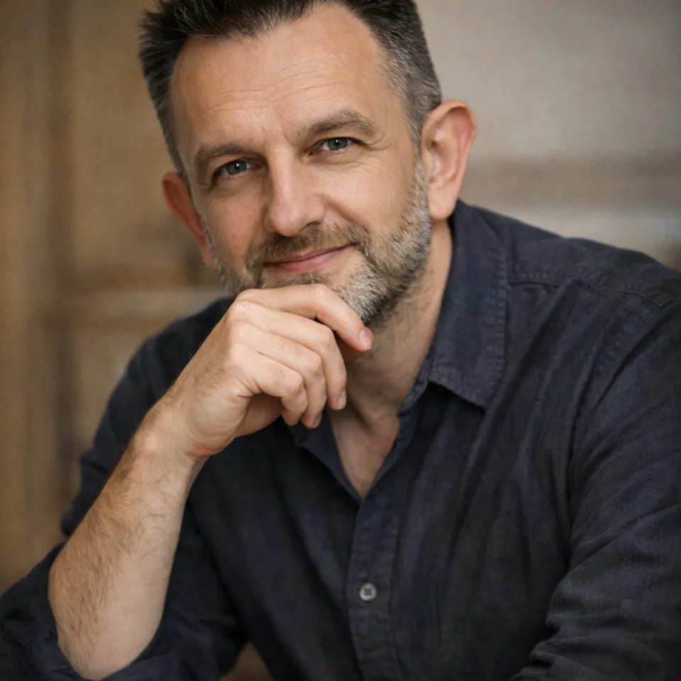
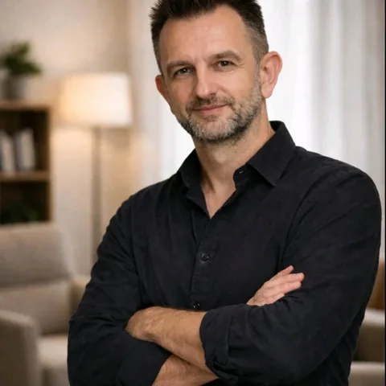
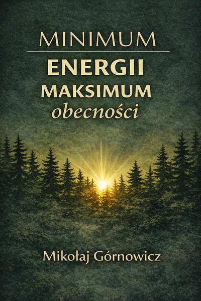

Coaching relacji w Toruniu i online. Wyjdź z chaosu i odzyskaj siebie.
Mikołaj Górnowicz: ponad 20 lat pracy z ludźmi i ponad 3500 godzin rozmów 1:1. Pomagam zrozumieć schematy, postawić granice i podjąć decyzję.
Umów Sesję Pierwszego Kroku - 247 zł60 minut, online lub w Toruniu. Dwa e-booki w cenie.
Czy któreś z tych zdań jest o Tobie?
Z takimi sprawami ludzie przychodzą na pierwszą rozmowę najczęściej.
- Czujesz chaos w relacji i nie wiesz, od czego zacząć.
- Nie wiesz, czy zostać, czy odejść.
- Tracisz siebie w związku.
- Trudno Ci postawić granice bez poczucia winy.
- Boisz się samotności bardziej niż tego, co jest teraz.
- W kolejnych relacjach powtarzasz te same schematy.
- Chcesz odzyskać spokój i wpływ na własne życie.
- Chcesz wrócić do własnych decyzji.
Nie musisz dziś wiedzieć, co zrobić. Wystarczy zobaczyć swoją sytuację z innej perspektywy.
Jak możemy pracować razem
Większość osób zaczyna od Sesji Pierwszego Kroku. Po niej wiesz, czy i jak chcesz iść dalej.
Sesja Pierwszego Kroku
- 60 minut rozmowy 1:1, online lub w Toruniu
- e-booki "Ścieżki Pewności" i "Minimum energii. Maksimum obecności"
- jasne podsumowanie kierunku po rozmowie
- termin wybierasz sam w kalendarzu
Świadoma Decyzja
- 60 minut rozmowy 1:1 online
- książka papierowa z wysyłką
- test relacji z interpretacją i omówieniem audio
Coaching indywidualny
- cztery spotkania w miesiącu
- praca nad relacjami, granicami i decyzjami
- przestrzeń na pytania między spotkaniami
Mentoring indywidualny dla osób przed ważną decyzją zawodową lub życiową, zarządzających ludźmi albo planujących kolejny etap rozwoju. Łączę refleksję coachingową z doświadczeniem zarządczym.
Zapytaj o mentoringOd zakupu do rozmowy w czterech krokach
- Kupujesz Sesję Pierwszego KrokuPłatność online, 247 zł za cały pakiet.
- Dostajesz e-booki i link do kalendarzaOd razu po opłaceniu, na adres e-mail.
- Wybierasz termin i formę spotkaniaOnline albo w Toruniu, bez pisania i czekania na odpowiedź.
- Spotykamy sięGodzina rozmowy, po której wiesz, jaki jest Twój następny krok.
Kiedy i gdzie
Liczba terminów w tygodniu jest ograniczona. To nie terapia ani diagnoza, tylko rozmowa, która porządkuje i daje kierunek.

Nazywam się Mikołaj Górnowicz
Od ponad 20 lat pracuję z ludźmi: jako lider, mentor i coach. Pracuję z osobami, które stoją w trudnych momentach życia i relacji. Nie uczę teorii. Pomagam zobaczyć to, czego często nie widać z własnej perspektywy.
Wiem, jak wygląda chaos w relacjach, brak decyzji i życie między lękiem a nadzieją. Dlatego moja praca opiera się na doświadczeniu, nie tylko zawodowym, ale też życiowym. Krok po kroku, bez oceniania i bez gotowych schematów.
- ponad 3500 godzin rozmów rozwojowych i sesji 1:1
- coach, mentor i trener rozwoju osobistego
- autor książki "Minimum energii. Maksimum obecności"
Nie chcę Cię naprawiać. Chcę pomóc Ci się zobaczyć.
Minimum energii. Maksimum obecności
Książka dla ludzi, którzy zbyt długo byli dla innych, a zbyt rzadko dla siebie. Bez pustych haseł i obietnic, że wszystko zmieni się w siedem dni. Z niej dowiesz się między innymi:
- dlaczego tak trudno przestać ratować innych,
- skąd biorą się powtarzające schematy w relacjach,
- dlaczego poczucie winy pojawia się, kiedy stawiasz granice,
- jak odzyskać przestrzeń na własne potrzeby i decyzje.
79 zł książka papierowa A5, 97 stron, test stylów przywiązania w PDF i dostawa w cenie
Zamów książkę
Najczęstsze pytania
Czym coaching relacji różni się od terapii?
Coaching to nie terapia ani diagnoza. To rozmowa, która porządkuje sytuację i pomaga wybrać kierunek: przyglądamy się temu, co się dzieje w relacji, nazywamy schematy i ustalamy konkretne kroki.
Ile kosztuje pierwsza sesja coachingowa?
Sesja Pierwszego Kroku kosztuje 247 zł. To 60 minut rozmowy 1:1 online albo stacjonarnie w Toruniu, dwa e-booki jako przygotowanie i podsumowanie kierunku po rozmowie.
Gdzie odbywają się spotkania?
Online przez Google Meet w poniedziałki, wtorki i środy albo stacjonarnie w Toruniu w czwartki i piątki.
Jak umówić termin?
Po opłaceniu sesji dostajesz e-booki i link do kalendarza, w którym sam wybierasz termin i formę spotkania. Nie trzeba pisać ani czekać na ustalenie daty.
Czy muszę wiedzieć, czy zostać w związku, czy odejść?
Nie. Nie musisz dziś wiedzieć, co zrobić ze związkiem, pracą czy życiem. Czasem wystarczy jedna rozmowa, żeby zobaczyć swoją sytuację z innej perspektywy.
Z czym można przyjść na coaching relacji?
Z chaosem w relacji, trudną decyzją, kłopotem z granicami, lękiem przed samotnością albo powtarzaniem tych samych schematów w kolejnych związkach.
Zrób pierwszy krok. Zacznij od jednej rozmowy.
Sesja Pierwszego Kroku: 60 minut rozmowy 1:1, dwa e-booki i podsumowanie kierunku. Po zakupie sam wybierasz termin w kalendarzu.
Umów Sesję Pierwszego Kroku - 247 złOdpowiadam osobiście, zazwyczaj w ciągu 24 godzin.